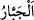

bir mühürleme ile “mühürler.” Böylece o kişi hidâyetten engellenir.
Aşırı gitme, şüphecilik ve bâtıla dayanarak âyetler hakkında cidâl yapma gibi şeyler,
büyüklük taslama sonucu kalpten sâdır olmaktadır.
Râğıb der ki: Bir insanı tavsif etmek için kullanılan “
” lafzı, “hak etmediği bir
yücelik makamına sahip olduğunu iddiâ ederek ayıp ve kusurunu ıslah edip, düzelten
için kullanılır. Bu ifâde ancak birisi kötüleneceği zaman kullanılır. Sultanlara, ya
herkesi iradelerine âmâde kıldıklarından dolayı, ya da halklarının işlerini düzeltip ıslah
ettiklerinden dolayı “cebbâr” denir. Yâni “cebr”, bazen salt ıslah anlamında bazen de
salt galebe çalma anlamında kullanılır. Ebu’l-Leys “büyüklük taslayan her zorbanın
kalbini” ifadesini: “büyüklük taslayan her bir zorba kalbi” şeklinde tefsir eder. Keşfü’l-
esrâr’da da buna benzer bir açıklama vardır.
Buna göre “kalb” lafzı, “mütekebbir” kelimesine izâfe edilmiş olarak tenvinsizdir.
Çünkü tekebbür eden, insandır. Bazı kırâat imamları ise “kibirlenme” fiilini bizzat
kalbe isnâd edip kalbin sâhibini kasdederek “kalb”i tenvinli okumuştur. Zira kalb her
tekebbür ettiğinde sahibi de tekebbür eder ki bunun aksi de vâriddir. “Gözlerin zinâsı
da bakmaktır”[180] hadisi, “gözlerin sahibinin zinâsı” anlamındadır.
Kevâşî’de der ki: Her iki kırâate göre de “küll” lafzı, ilâhî mühürlemenin kalbin
tamamını kapsadığını göstermektedir. Yoksa bütün kalpleri kapsadığını değil.
Fakir (Bursevî) şöyle der: Mâlûmunuz olsun ki mühürleyen, Allah’tan başkası
değildir. Mühürlenen kalbdir. Mühürlenme sebebi ise kibirlenme ve zorbalıktır.
Mühürlemenin sonucu, kalbdeki inkâr, nifâk, dalâlet ve yamukluğun kalbden bir daha
çıkmaması ve kalb dışındaki îman, ihlâs, doğruluk ve hidâyetin kalbe bir daha
girememesidir. Yüce Allah’ın, kul hakkındaki en büyük cezâsı budur. Bu bakımdan aklı
başında olanların, beraberinde kalbin mühürlenmesini değil, göğüslerin genişlemesini
getirecek sebeplere teşebbüs etmesi gerekir.
İbrahim Havvâs (k.s) der ki: Kalblerin beş tane ilacı vardır: Kur’an’ı dikkatlice
okumak, karnı doldurmamak, gece ibâdetine kalkmak, seher vaktinde Allah’a yakarmak
ve sâlihler meclisinde bulunmak.
Hasan Basrî de şöyle der: Şu kalblerinizle Allah’ı zikredip dâima hatırda tutmak
suretiyle konuşunuz. Çünkü kalbler hızla kayabilmekte, bıçak ve kılıcın paslanması gibi
paslanabilmektedir. Bu sözde geçen “muhâdese” kelimesi “temizlemek” anlamındadır.
Ancak bu durum, temizlenmeye elverişli kalbler için geçerlidir. Çünkü nice kalbler
vardır ki buna elverişli değildir.
[Sa’dî, Gülistân’da der ki:]
Paslanan demir cilayla da parlatılmaz.
Yüreği kara olana ne kâr eder vaaz? Demir çivi asla taşa işlemez.
Hadiste şöyle buyrulur: “Benim de bazen kalbim buğulanır ve her gün yüz kere
Allah’tan bağışlanma dilerim.”[181]